右上から「New Repogitory」を選びます
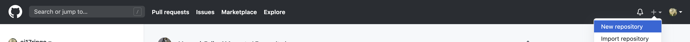「自分のGithubユーザー名.github.io」をリポジトリ名に追加し、Create Repositoryボタンを押します
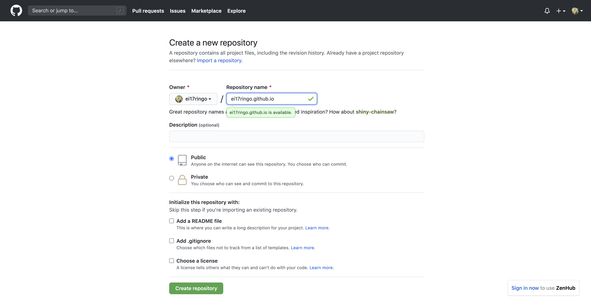URLをクリップボードにコピーするボタンでコピーします
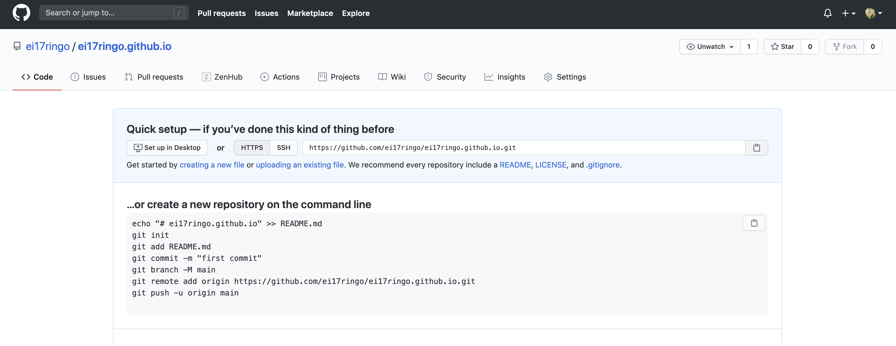SourceTreeを起動し「URLでクローン」を選択します
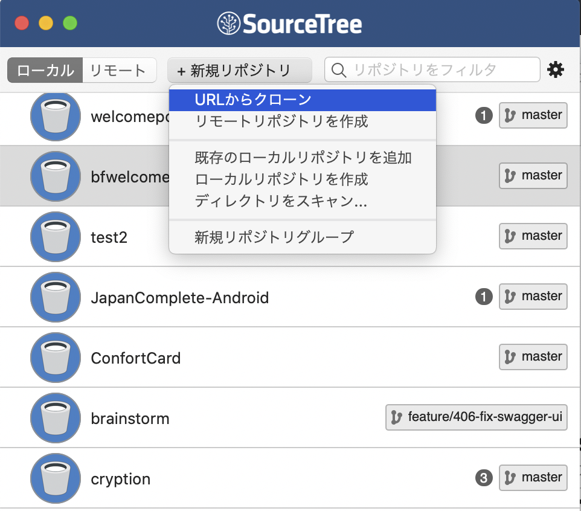ソースURLに３．でコピーしたURLを貼り付け、保存したい場所を「保存先のパス」に記載し、「クローン」を押します。
「保存先のパス」に指定した場所に隠しファイル.gitが出来ているか確認します。
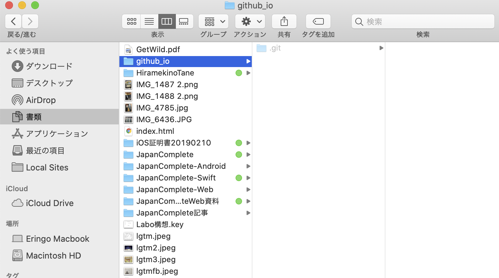公開したいファイルたちをフォルダ構造を崩さないようにフォルダごとコピーします。
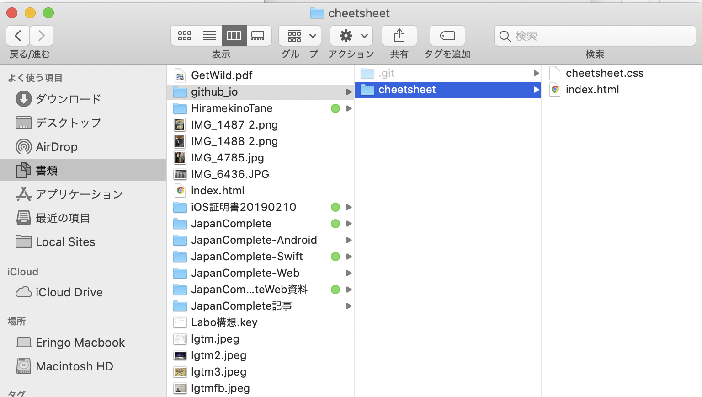SourceTreeに戻ると追加したファイルが作業ツリーに現れます。
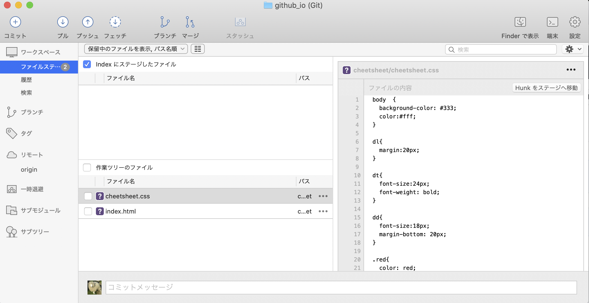「作業ツリーのファイル」チェックボックスにティックしてすべてのフォルダ、ファイルをコミット対象にします。
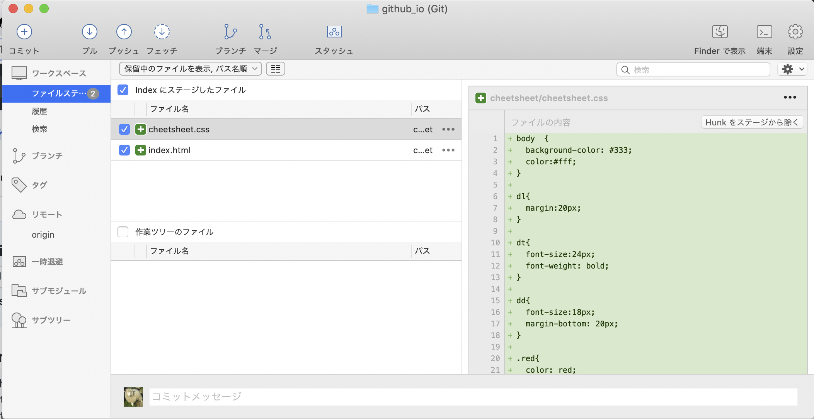コミットメッセージを書いて、コミットボタンを押します。
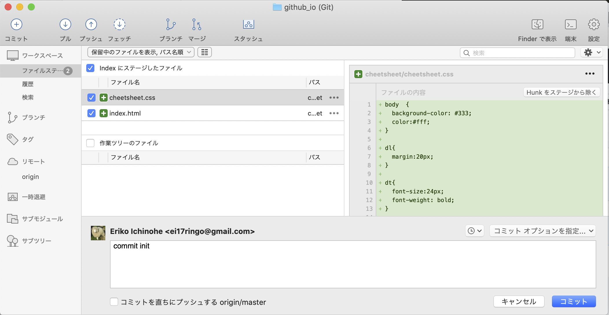「履歴」からしっかりコミットできてるか確認します。
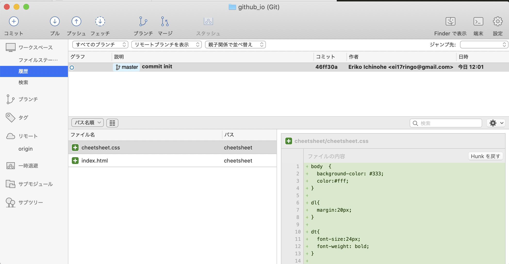Pushを押して、出てきた「master」のチェックボックスにティックし、OKを押します。
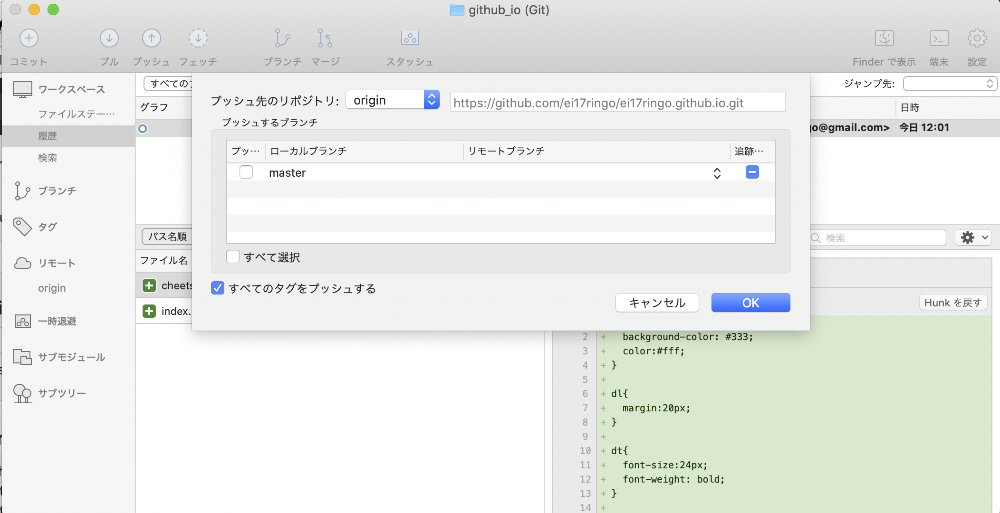再度OKを押します。
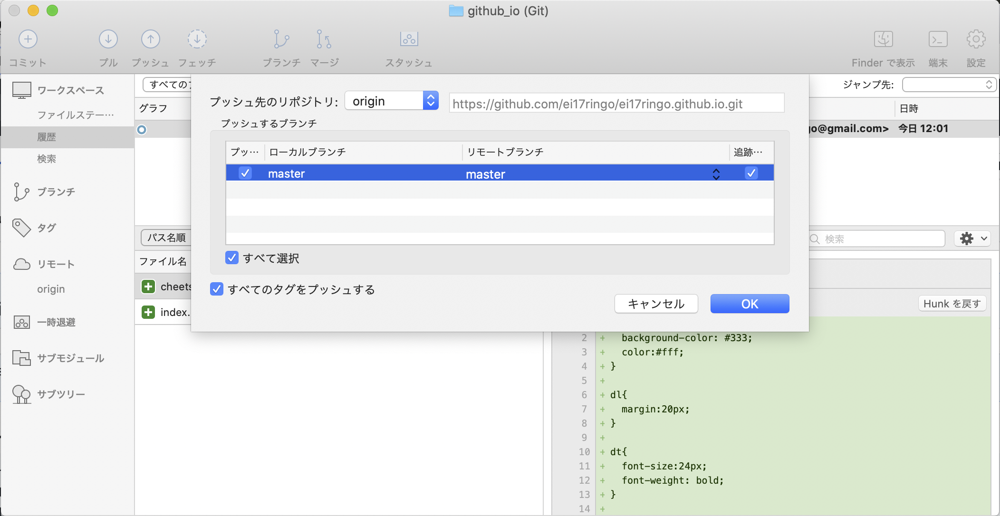Githubにアップロードできているか確認します。
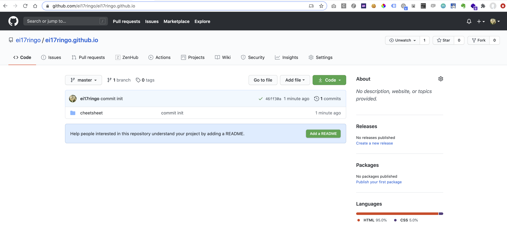「https://自分のGithubユーザ名.github.io/保存したフォルダ」にアクセスし、公開されてることを確認します。
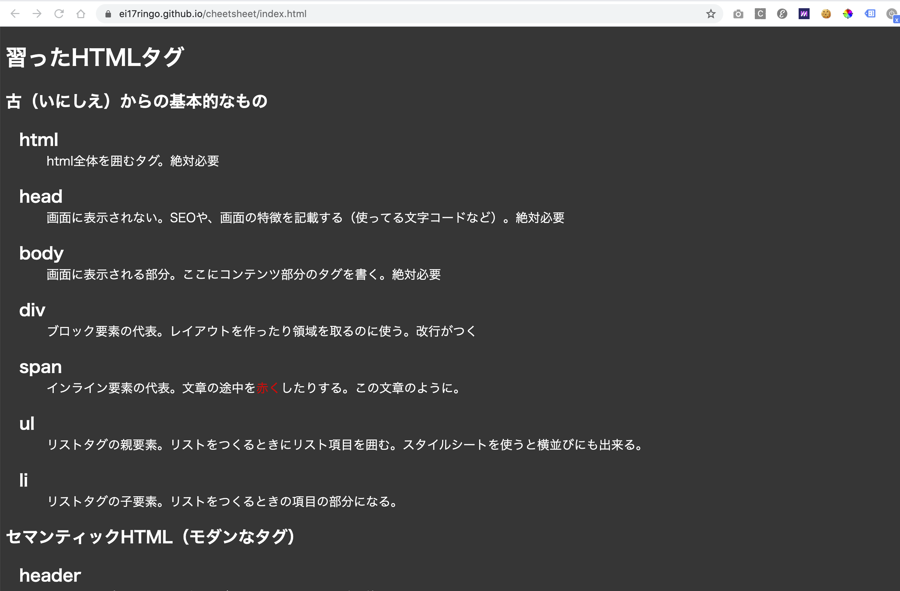